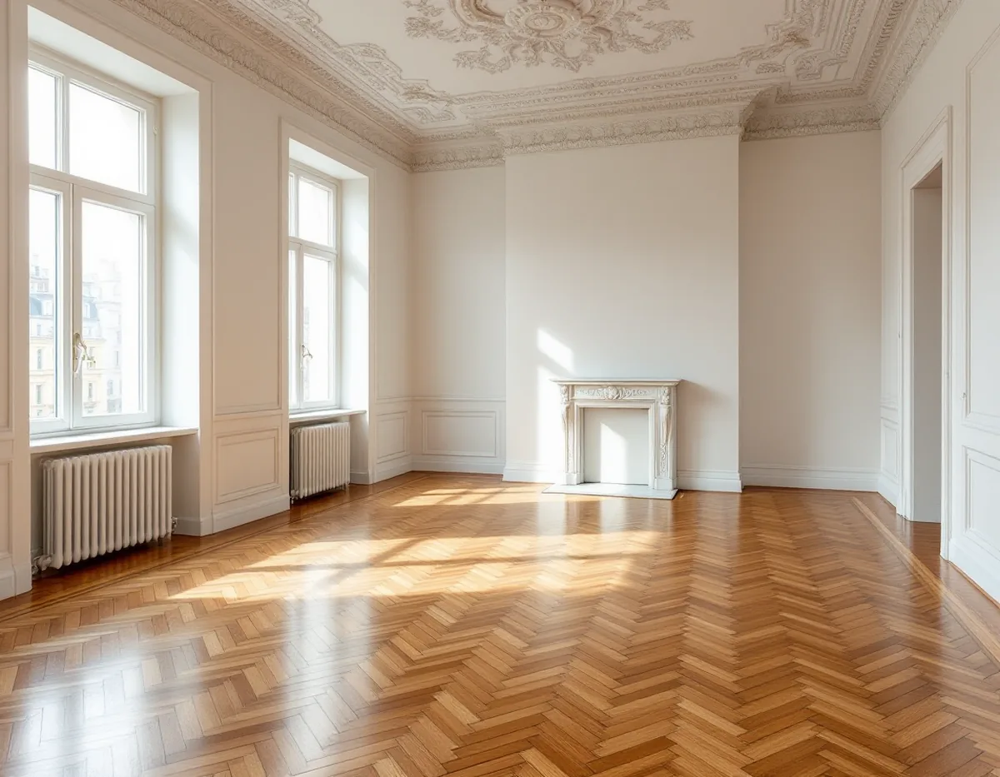
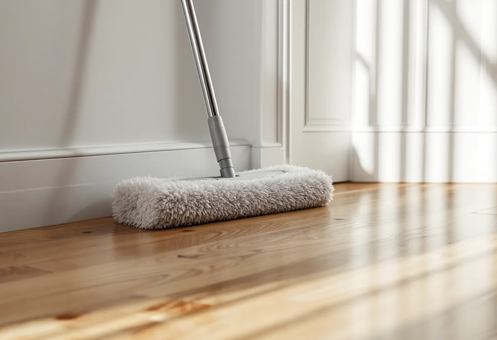

Platsbesök
Vi tittar på lacken i gångstråken och frågar vilka medel golvet har skötts med.

Ett lackat trägolv med gråa gångstråk behöver inte nödvändigtvis slipas ner till bart trä.
Beskriv jobbet kort.
Något blev fel. Kontrollera uppgifterna eller ring 08 12 410 276.
Vi tittar på jobbet på plats innan du får offert.
Du ser vad som ingår och vad det kostar.
Vi drar av ROT direkt och sköter ansökan.
Geal Entreprenad AB, Bromma. Org.nr 559303-7566.

Ibland räcker en lätt puts och ett nytt lager lack, ibland ett underhållsmedel som moppas på. Geal Entreprenad AB slipar och ytbehandlar trägolv på Östermalm och börjar med att ta reda på vad golvet behöver och vad det har behandlats med tidigare.
I stadens områdesfakta för stadsdelen Oscars kyrka fanns 10 022 bostäder 2025. Av dem var 7 735 bostadsrätter och bara 8 låg i småhus. På Gärdet var motsvarande siffror 15 571 bostäder och 9 370 bostadsrätter. Golven i de här lägenheterna har ofta haft flera ägare före dig.
Ett massivt trägolv kan enligt Golvbranschen renoveras så länge det finns en godtagbar tjocklek kvar. Har tidigare ägare slipat det flera gånger kan det mesta redan vara borta. Innan vi föreslår en ny slipning kontrollerar vi därför tjockleken, till exempel med en kniv i en springa i ett hörn av rummet, som riktlinjerna SLIP 22 beskriver. Samma riktlinjer påpekar att det inte är luftfuktigheten i sig som ställer till det för ytbehandlingen, utan variationerna i den.
Golvbranschens riktlinjer för underhåll av trägolv, UNDERHÅLL 22, beskriver en trappa av åtgärder. Vid små repor, så kallade mikrorepor, används en underhållslack, lackrefresher, som läggs på med mopp efter att golvet har städats och våttorkats. Rekommenderad mängd är en liter till 50–80 kvadratmeter, och slitaget avgör hur ofta det behöver göras.
Vid större repor och skadad lackyta är nästa steg överlackering. Golvet rengörs och putsas lätt med fint slippapper innan ett nytt lager lack stryks, och riktlinjerna säger att ett vidhäftningsprov ska göras först. Är träet blottat eller golvet vattenskadat krävs en renovering med slipning. De flesta trägolv kan enligt riktlinjerna i regel maskinslipas flera gånger.
Bedömningen görs på plats och kan bli olika i olika rum. Ett gångstråk mellan hall och kök kan vara nött ner till trä medan sovrummet bara har ytliga repor.
Vi tittar på lacken i gångstråken och frågar vilka medel golvet har skötts med.
Före överlackering görs ett vidhäftningsprov, och vid misstanke om vax en provyta.
Du får ett förslag på refresher, överlackering eller slipning med ytbehandlingen specificerad.
Golvet rengörs från smuts och gamla medel, och eventuell silikon tas bort.
En lätt puts med fint papper eller slipning i tre steg ner till trä.
Lacken stryks i rätt antal lager och du får råd om städning och underhåll.
Ett golvjobb på Östermalm består av dagar med maskiner och dagar då lacken eller oljan torkar. Hur många dagar det blir beror på ytan, antalet rum, hur mycket som ska lagas och vilken ytbehandling du väljer. Enligt Golvbranschens riktlinjer för lackering kan rummet normalt möbleras efter minst ett dygn, medan mattor bör vänta minst en vecka. Tidplanen står i kostnadsförslaget.
Golvslipning räknas som rotarbete i en bostadsrätt om du enligt stadgarna har underhållsansvaret för golvet och arbetet görs inne i lägenheten. Avdraget gäller arbetskostnaden för att slipa och lacka, inte lacken eller andra material.
Avdraget är 30 procent av arbetskostnaden, upp till 50 000 kr per person och år, och tillsammans med rutavdrag högst 75 000 kr. Geal drar av det direkt på fakturan.
Om golvet behöver slipas ner till trä eller bara underhållas, hur stor ytan är och om golvet är mönsterlagt väger tyngst. Efter ett gratis platsbesök får du ett skriftligt kostnadsförslag.
Vi publicerar inga prislistor, eftersom två golv med samma yta kan kräva olika mycket arbete. I kostnadsförslaget står slipning, lagning och ytbehandling som egna poster, med ROT-avdraget uträknat. Hur metoderna och ytbehandlingarna skiljer sig åt, och vad som ingår, beskriver vi på sidan om golvslipning i Stockholm.
Slipa parkett och trägolv – lack, olja eller lut.
Golvslipning i Stockholm →Takbyte, takbesiktning och plåtarbeten.
Takläggare på Östermalm →Stenstad, Lärkstaden, Diplomatstaden och Gärdet.
Takrenovering på Östermalm →Kulturvärden, förvanskningsförbud och klassning.
Badrumsrenovering på Östermalm →Slå ihop två lägenheter.
Byggföretag på Östermalm →Husets ursprungliga kulör.
Fasadmålning på Östermalm →Gatufasad, gårdsfasad och lovfrågan.
Fasadrenovering på Östermalm →Stenstaden, Lärkstaden och villorna.
Fönsterbyte på Östermalm →Fönster och glas i Gärdets 1930-talshus.
Fönsterrenovering på Östermalm →Mönsterparkett, lack och olja.
Golvläggare på Östermalm →Stora lägenheter och kulturvärden.
Köksrenovering på Östermalm →Limfärg i taken, dekor och lov.
Målare på Östermalm →Taklandskapet och balkongerna.
Plåtslagare på Östermalm →Lagning av dörrar, paneler och fasta snickerier.
Snickare på Östermalm →Nytt tak med taksäkerhet och snörasskydd.
Takbyte på Östermalm →Klassade våningar och bostadsrätt.
Tapetsering på Östermalm →Renovera hela lägenheten.
Totalrenovering på Östermalm →Eller ring 08 12 410 276, mån–fre 08–17.
Beskriv jobbet kort.
Något blev fel. Kontrollera uppgifterna eller ring 08 12 410 276.